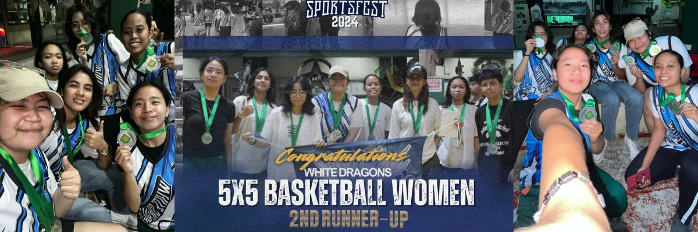

Hello! I'm Jazelle Chloe C. Guillermo,
a first-year Computer Science student at Cavite State University - Imus Campus.
I’m passionate about technology and constantly eager to learn new things. This website is where I share more about myself, my experiences, and the things that inspire me.
As a Computer Science student, I’m excited to continue growing and expanding my knowledge. This site is one way for me to document my journey and share it with you. I’m looking forward to where my studies and passions will take me.
Feel free to explore the various sections of my site, including my resume, my story, my family, and my favorite things.
Thank you for visiting, and I hope you enjoy your time here and get to know me better!
My resume contains essential information about my professional journey, including my personal details, work objectives, educational background, academic achievements, skills, and involvement in extracurricular activities and organizations. I plan to update it regularly to reflect my ongoing growth and accomplishments.
Hi there! I'm Jazelle Chloe C. Guillermo, a 19-year-old first-year Computer Science student at Cavite State University - Imus Campus. I was born on November 19, 2005, making me a proud Scorpio! While I'm an introvert, I feel comfortable and playful when I'm with my friends and family.
I chose to pursue Computer Science because I was inspired by my dad, who is a Network Engineer/IT professional. His dedication to his work sparked my interest in technology. Another turning point for me was receiving the Best in Computer System Servicing and Best in Science awards during my Grade 10 moving-up ceremony. I took it as a sign that this path was meant for me.
Beyond academics, I am a creative and curious individual who loves exploring astronomy, especially the moon, which fascinates me. I enjoy music, movies, and reading, as they allow me to escape and expand my imagination. My hobbies include crocheting and playing the ukulele, which let me express my creativity.
I also enjoy staying active with sports like basketball, biking, and fishing. In addition, I'm a huge fan of K-pop and P-pop, with my favorite groups being ENHYPEN, SEVENTEEN, BINI, and IZNA. Their music has become my safe and comforting space, inspiring me daily.
Through this website, I hope to share my journey, including my aspirations, achievements, and the little things that make life meaningful to me. Thank you for taking the time to get to know me better!
Here are some photos that highlight my life so far, capturing the moments & memories that make me who I am.
These photos were taken during the first visit of my favorite group, ENHYPEN, to the Philippines on February 4, 2023, at MOA Manila during their 'Manifesto' tour. Sadly, my friends and I didn’t attend the concert because we didn’t have tickets, so we just roamed around MOA searching for freebies. We were called 'Team Labas.'
These photos were taken during my JHS Moving-Up Ceremony on July 13, 2022, where I received the awards for With High Honors, Best in Computer System Servicing, and Best in Science.
These photos were taken during my 18th birthday on November 19, 2023, when I celebrated my debut with my friends and family. It was my most favorite night.
These photos were taken during my SHS graduation on May 31, 2024, where I received the award for With High Honors, marking the end of my high school days.
These photos were taken during a trip to Tokyo, Japan, from August 2-7, 2024, when my mother and I, along with my mother's brother's family, visited Tokyo Disneyland, Senso-ji Temple, Mt. Fuji, Hanabiyori, Tokyo Skytree, TeamLab Planets, Tokyo Tower, and Shibuya Crossing.
These photos were taken recently during the ENHYPEN Dunkin' Funmeet on December 6, 2024, at the Araneta Coliseum. This was my first time seeing my favorite group, ENHYPEN. My friend Dein and I paid for General Admission seats, and it was so worth it, even though they were far away.
My family consists of four members.
My father, Epie Rey Guillermo, is a hardworking Network Engineer/IT professional who has always been dedicated to providing for us.
My mother, Josie Guillermo, is a loving housewife who stayed home to care for me and my brother, showing selflessness and devotion.
I am Jazelle Chloe Guillermo, the eldest, and my younger brother, Manuel Jeoffrey Guillermo, is a Grade 10 student with a three-year age gap between us.
We live in Bacoor, Cavite, and are a Born-Again Christian family. My parents, who met and became a couple through their shared faith, have raised me and my brother with the same values. Since I was born, attending church at 'Victory' every Sunday has been a cornerstone of our lives, shaping who we are today.
Here are some things that I really enjoy and that bring me happiness:
In my free time, I enjoy staying active and creative. I love playing basketball, riding my bike, crocheting, and playing the ukulele. These hobbies help me relax and have fun, and they’re great ways to express myself!
During the 21st Founding Anniversary and Sports Festival of Cavite State University - Imus Campus, I actively participated in the Women's Basketball 5x5 division. It was an exciting event, and I’m proud to share that my team won the bronze medal! It was such a memorable experience to be part of this event, and I had so much fun representing our program Computer Science!
I’m a huge fan of K-pop and P-pop! I love how energetic and creative the music and performances are. Some of my favorite groups are ENHYPEN, SEVENTEEN, BINI, and IZNA.
I recently saw ENHYPEN during their Funmeet at Dunkin' in Araneta Coliseum, and it was my first time seeing them.
I love watching movies, especially romance, fantasy, science fiction, thriller, horror, and comedy. Each genre gives me a different experience.
When it comes to books, I enjoy reading about science, as well as science fiction, thrillers, and investigative stories. These books spark my imagination and help me see the world in new ways.
Astronomy is something I’m really passionate about. I love looking at the moon, stars and learning about the universe. It’s amazing to think about how vast and mysterious space is!